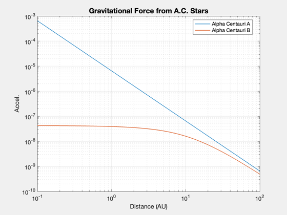
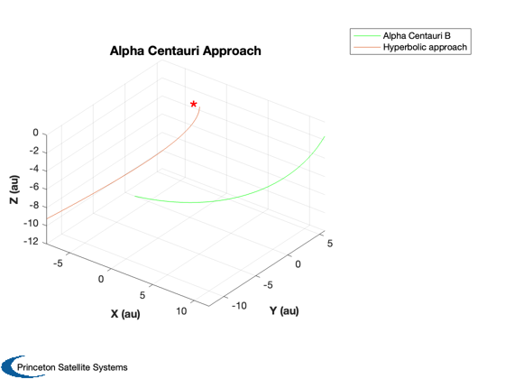

Analysis of approach orbits to Alpha Centauri binary system
Alpha Centauri A-B system is in XY plane The spacecraft approaches from Earth at: 16.7 deg elevation angle to the plane -122.2 deg azimuth angle (measured from perigee of B's orbit about A)
Begin approach with a hyperbolic orbit around A. You may use this as an initial condition to numerically integrate RHS to see effect of B disturbance. Use RHSAlphaCentauriMission.
Since version 10. ------------------------------------------------------------------------ See also AlphaCentauriMissionAnalysis ------------------------------------------------------------------------
Contents
- Constants
- position of Alpha Centauri A with respect to Earth
- orbit of binary star system (B about A)
- rotation matrix from local perifocal to standard inertial frame
- position of star B about star A in perifocal frame of Alpha-Centauri
- position of Earth in Alpha-Centauri perifocal frame
- angular representation of Earth position
- compute gravitational force to A, B, along line
- Plot the gravitational force from both stars
- hyperbolic approach orbit
- Keplerian orbit for hyperbolic approach over 10 Earth-years
- Plot approach path
%-------------------------------------------------------------------------- % Copyright 2011 Princeton Satellite Systems, Inc. All rights reserved. %--------------------------------------------------------------------------
Constants
day = 86400; au = Constant('au'); muScale = day^2 / au^3; muE = 3.98600436e5 * muScale; muS = Constant('mu sun') * muScale; muA = 1.10*muS; muB = 0.93*muS;
position of Alpha Centauri A with respect to Earth
rA = HMS2Rad(14,39,36.5); % right ascension dec = DMS2Rad(-60,50,02.3); % declination uPosAC = [cos(rA)*cos(dec);sin(rA)*cos(dec);sin(dec)]; % unit vector distAC = 63241.1; % distance (AU) posAC = uPosAC*distAC; % position vector
orbit of binary star system (B about A)
sma = 17.57*1.338; % AU
ecc = 0.5179;
inc = 79.2*pi/180;
raan = 204.85*pi/180;
prg = 241.65*pi/180;
elB = [sma, inc, raan, prg, ecc, 0];
rotation matrix from local perifocal to standard inertial frame
Here, xy is the Sun-Earth ecliptic plane.
cMat = CP2I( inc, raan, prg );
position of star B about star A in perifocal frame of Alpha-Centauri
w0 = 0; w = w0 + linspace(0,2*pi); rBMag = sma*(1-ecc^2) ./ (1+ecc*cos(w)); rBA = [ rBMag.*cos(w); rBMag.*sin(w); zeros(size(w)) ];
position of Earth in Alpha-Centauri perifocal frame
posE = cMat'*-posAC; uPosE = Unit(posE);
angular representation of Earth position
elev = asin( posE(3) / Mag(posE) ); % elevation measured to +Z from XY azim = atan2( posE(2), posE(1) ); % azimuth measured towards +Y from +X
compute gravitational force to A, B, along line
n = 1e3; distX = logspace(-1,2,n); rSA = [uPosE(1)*distX; uPosE(2)*distX; uPosE(3)*distX]; rSB = rSA - repmat(rBA(:,1),1,n); gA = zeros(3,n); gB = zeros(3,n); for i=1:n gA(:,i) = -muA*rSA(:,i)/Mag(rSA(:,i))^3; gB(:,i) = -muB*rSB(:,i)/Mag(rSB(:,i))^3; end
Plot the gravitational force from both stars
Plot2D(distX,[Mag(gA);Mag(gB)]*au/day^2,'Distance (AU)','Accel.','Gravitational Force from A.C. Stars','log',[],[],[],[],[],{{'Alpha Centauri A','Alpha Centauri B'}})
hyperbolic approach orbit
e = 1/cos(elev); i = pi/2; ra = azim + pi; w = 0; M = 0; a = 1/(1-e); elH = [a,i,ra,w,e,M];
Keplerian orbit for hyperbolic approach over 10 Earth-years
t = (-5 : .01 : 5)*365.25; r = RVOrbGen([a,i,ra,w,e,M],t,[],muA);
Plot approach path
rB = RVOrbGen( elB, t, [], muA ); [h, hL] = Plot3D(rB,'X (au)', 'Y (au)', 'Z (au)','Alpha Centauri Approach'); set(hL,'linewidth',0.5,'color',[0 1 0]); hold on rk = RVOrbGen(elH,t,[],muA); plot3(rk(1,:), rk(2,:), rk(3,:)) set(gca,'zlim', [-12 0]); text(0,0,0, '*','color',[1 0 0],'fontsize',24) legend('Alpha Centauri B','Hyperbolic approach'); % PSS internal file version information %-------------------------------------- % $Id: 8d9f38bc72001ed58fa2c844627cdd0e061cb266 $